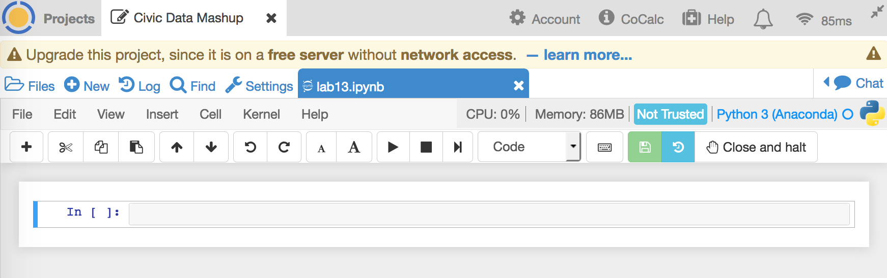
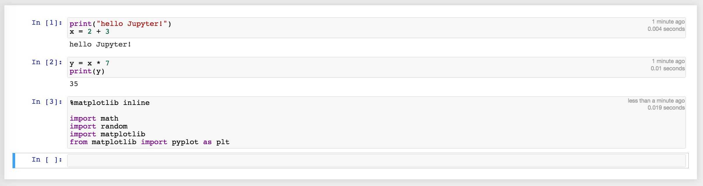
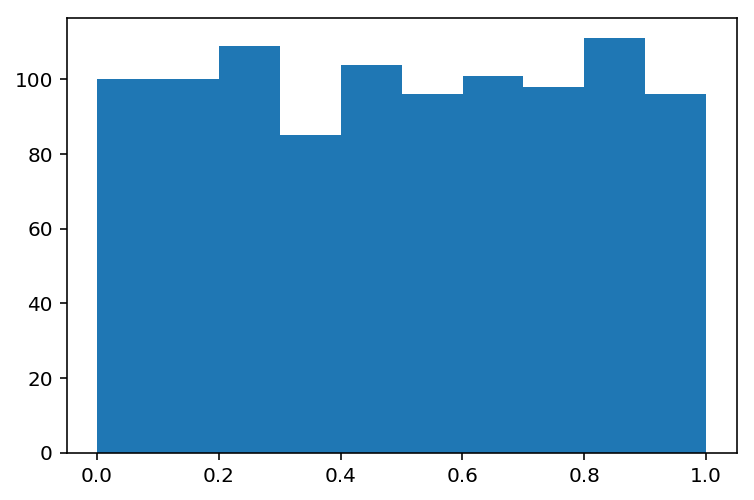
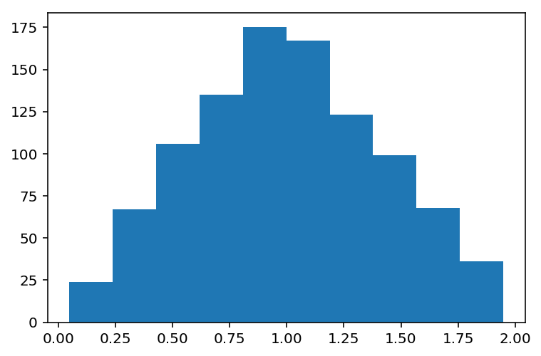
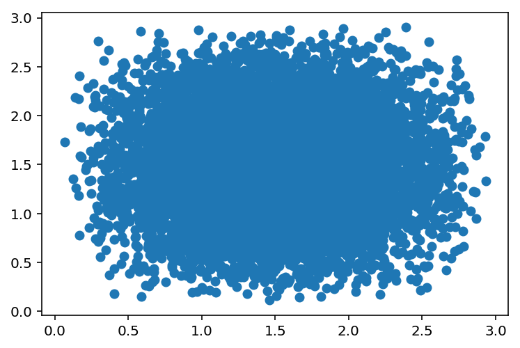
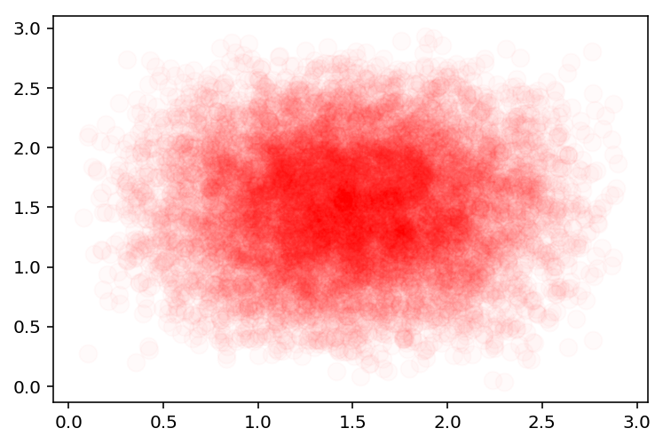
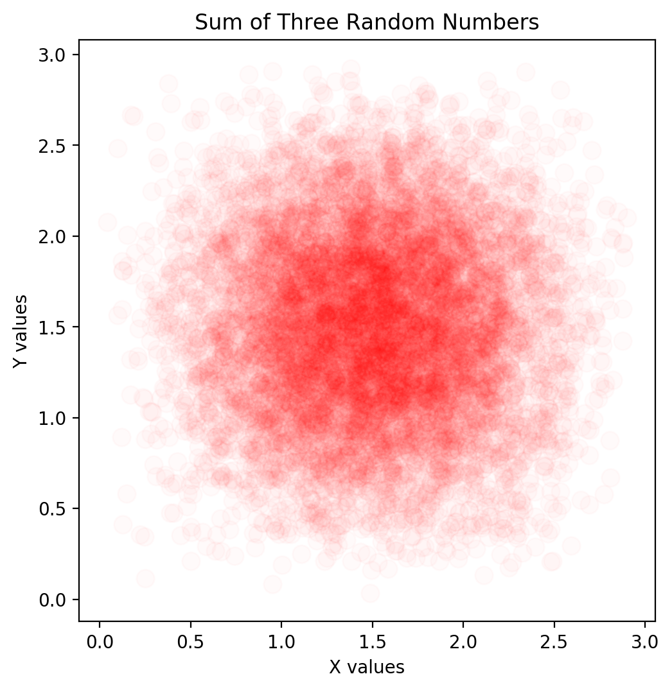
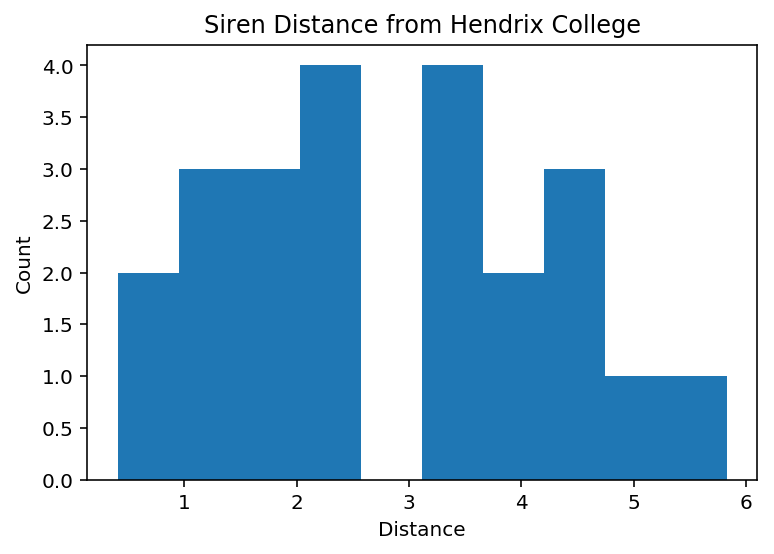

The City of Conway Outdoor Warning Siren system consists of 22 sirens strategically placed throughout the City. The sirens may be activated individually or simultaneously to provide a general alert for the entire community.With the continual expansion of Conway in recent years, are there locations in need of new sirens? We will explore this question by calculating and visualizing the relationship between the locations of sirens and educational institutions in Conway.
Once you are logged in, you will see the Projects area. This will be where you can create workspaces for analysis. In the Project Title box, type Civic Data Mashup, then select the green Create Project button below.
You should now find a blue link to Civic Data Mashup, click this link to enter the project space. There will be no files found right now, so select the large + to Create a new file.
Name your new file lab13, and select Jupyter Notebook as the type. Your browser should look like this:

print("hello Jupyter!")
x = 2 + 3
To execute this code, hit Shift+Enter. Notice that this block is now labeled "In [1]:", the output is below, and a new block has appeared. In this block type the following and hit Shift+Enter.
y = x * 7 print(y)
We can see that it is easy to group our code into blocks and execute pieces of it individually with the Shift+Enter keys. The variables will be stored across blocks.
Before we can draw some figures, we will need a few more libraries. Paste the code below into a block in your notebook and hit Shift+Enter to execute it.
%matplotlib inline import math import random import matplotlib from matplotlib import pyplot as plt
This will load up the math and random libraries, and the matplotlib library, which we will use for all of our plotting functions. Your code should now look like this:

hist
that will draw a histogram when given a list of numbers.
For our first plots, we will visualize the distribution of random numbers
draw from our random module with random.random(). Recall that
these numbers should be uniformly distributed between 0 and 1.
nums, where each element is a uniform random number from 0 to 1. Then, write plt.hist(nums) to draw the image
in your notebook. It should look like this

nums2, where each element is the sum of two uniform random numbers from 0 to 1.
Then, write plt.hist(nums2) to draw the image
in your notebook.

scatter function will draw such a graph in Matplotlib.
xs, and ys, where each element is the sum of three uniform random number from 0 to 1.
Then, write plt.scatter(xs, ys) to draw the image
in your notebook.

Change your earlier scatter plot call to
plt.scatter(xs, ys, s=100, c="r", alpha=0.02).

plt.scatter.
fig = plt.figure(figsize=(6, 6), dpi=100) plt.axes().set_aspect(1)
These will set the size of the image to be at least 6 inches by 6 inches, and have a 1:1 aspect ratio between our x and y axes.
Second, it is always a good idea to title our figures and label our axes. We can add this flair with the following three lines.
plt.xlabel("X values")
plt.ylabel("Y values")
plt.title("Sum of Three Random Numbers")

Because the Earth is a sphere, these coordinates use degrees as their units. Also, because of a spherical Earth, we cannot simply calculate a distance between the two points using the Euclidean distance formula. We will need to calculate the Great Circle Distance between the two points to know how far along the globe we will need to travel. This algorithm is as follows, using ϕ for latitude and λ for longitude.
great_circle to calculate the great circle distance between two points when given
coordinates on the globe.
Use your function to calculate two distances: Conway to Little Rock, and Conway to Tokyo. You should get the following output.
>>> great_circle(35.0887, -92.4421, 34.7465, -92.2896) >>> 25.138861294152708 >>> great_circle(35.0887, -92.4421, 35.6895, 139.6917) >>> 6497.1752798603075
First, Schools.csv is a comma-separated file that contains information on the 23 educational institutions in Conway. In this file, we can find each school's latitude and longitude, the name, the type of school, and the street address.
Second, Tornado_Sirens.csv is a comma-separated file that contains information on the 30 tornado sirens in Conway. In this file, we can find again the latitude and longitude of each siren, its approximate street address, elevation, and whether it is active.
For both files, the first column of information is the Longitude, and the second column is the Latitude.
schools.
If you are successful, you should have the following value for schools[1]
['-92.454169059470274',
'35.095976925127481',
'8',
'0',
'Ida Burns Elementary',
'Elementary',
'1201 DONAGHEY AVENUE',
'{CE5DFB8D-1936-47D5-98FE-E7A171FDBCDF}']
Also repeat the above code for the Tornado_Sirens.csv file to create a list called sirens.
If you are successful, you should have the following value for sirens[1]
['-92.508840956149569',
'35.111419057080532',
'28',
'',
'OLD MORRILTON AND SANITATION',
'',
'"92° 30\' 31.827"" W"',
'"35° 6\' 41.109"" N"',
'',
'Pr',
'',
'',
'GISADMIN',
'2015-02-27T14:40:26.000Z',
'{3101BF55-F18C-425C-9193-348F9311E9C8}']
siren_list(sc) to return a list of distances between a given
school each of the sirens.
Next, draw a histogram of the distances found between Hendrix College all of the sirens. This graph should show the distribution of distances for sirens to schools. Be sure to add a title and label your axes.
How many sirens are within 1/2 mile? Within 1 mile? 
siren_list function to find the smallest distance to a siren for each
of the schools. Draw a histogram of these smallest distances found. This
graph should show the distribution of minimum distances for sirens to schools.
Be sure to add a title and label your axes.
Which school has the lowest minimum distance? Which school has the highest minimum distance (furthest away from any siren)?